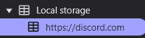

Instruções em Discord
- Vá para Local Storage, aperte a seta para aparecer "https://discord.com" e seguida clique nela.

- Clique no campo "Filtro" e pesquise "Token" (Isso, o "token" e não "tokens"), é crucial ter essa atenção.
- Por fim copie o código que está à direita do token junto com as aspas; e cole no campo de Verificação e Login Instantâneo no Universal Cookie.